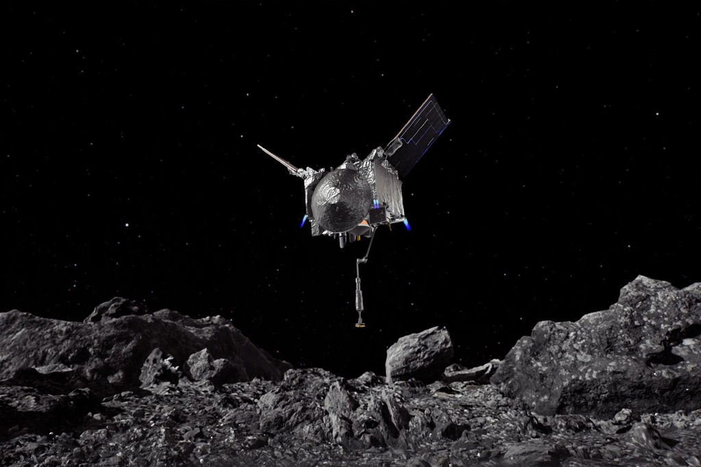

Notícias Cidade
Destaque
atenção
Área destinada a incrementação de notícias de qualquer ponto do planeta,podendo ser discutido qualquer assunto idependende de seu país ou cultura...
NASA
MISSÃO OSIRIS
Capturada em 20 de outubro de 2020 durante o evento de coleta de amostras Touch-and-Go (TAG) da missão OSIRIS-REx, esta série de imagens mostra o campo de visão do imageador SamCam conforme a espaçonave da NASA se aproxima e pousa na superfície do asteróide Bennu, sobre 200 milhões de milhas (321 milhões de km) de distância da Terra. O evento de amostragem trouxe a espaçonave até o local de amostragem Nightingale, pousando a menos de três pés (um metro) do local alvo. A equipe na Terra recebeu a confirmação às 18h08. EDT que ocorreu o touchdown com sucesso. Os dados preliminares mostram que a cabeça de amostragem de um pé de largura (0,3 metro de largura) tocou a superfície de Bennu por aproximadamente 6 segundos, após o qual a espaçonave realizou uma queima de retorno. LEIA MAIS!
MUNDO
-

Novas areas de estudo
"neste periodo de pandemia pessoas preucuram novas maneiras de se adaptar e ter novas rotinas!!!"-ficticio
-

Novas areas de estudo
"raio-x de tórax vêm se motrando muito promissor no diagnóstico de covid-19!!!"
-

conheça o grafeno
"O Grafeno é um material composto por uma fina camada de grafite, e desde sua descoberta, tem atraído os cientistas e a indústria tecnologia por suas infinitas possibilidades de uso.!!!" ...LEIA MAIS!